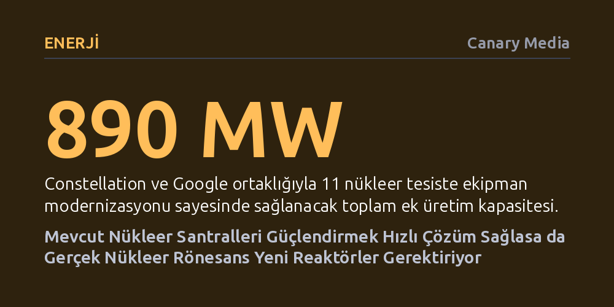

ENERJI · Canary Media · 2026-10-09
Google ve Constellation, 11 nükleer santralin kapasitesini yeni reaktör kurmadan 890 megavat artırmak için 4,3 milyar dolarlık anlaşma imzaladı. Mevcut tesisleri güncellemek ucuz ve hızlı bir çözüm sunsa da uzun vadeli hedefler için yeni reaktör inşası kaçınılmaz görünüyor.
Yapay zekanın devasa elektrik ihtiyacını karşılamak için sıfırdan reaktör inşa etmek yerine mevcut nükleer tesislerin türbin ve ekipmanlarını yenilemenin çok daha hızlı ve ekonomik bir ara çözüm olduğunu gösteriyor.

Yapay zeka veri merkezlerinin hızla katlanan elektrik talebi, teknoloji devlerini temiz ve kesintisiz enerji arayışında nükleer santrallere yönlendiriyor. Amerika Birleşik Devletleri’nin en büyük nükleer santral işletmecisi Constellation Energy, ülkenin en yoğun ve iletim kapasitesi en sıkışık elektrik piyasası olan PJM bölgesindeki 11 nükleer tesisin kapasitesini 890 megavat artırmak üzere Google ile 20 yıllık dev bir anlaşmaya imza attı. 4,3 milyar dolarlık bu girişim, Philadelphia yakınlarındaki Limerick santraline 348 megavat, New Jersey’deki Salem tesisine ise 97 megavat ilave güç kazandıracak.
Bu hamle sektörde münferit bir adım değil. Geçtiğimiz yıl Constellation ile Meta arasında 30 megavatlık benzer bir anlaşma yapılmış, Georgia Power ile Google da iki santralde toplam 96 megavatlık kapasite artışı için uzlaşmıştı. Google destekli bu dev projenin ilk ayağının 2028 yılına kadar tamamlanması, tüm güncellemelerin ise 2030’ların başında devreye girmesi hedefleniyor. Böylece yeni bir reaktör inşa edilmeden, neredeyse orta ölçekli bir nükleer santral büyüklüğünde temiz elektrik şebekeye kazandırılmış olacak.
Söz konusu anlaşmaların temelinde, nükleer sektörde "güç artırımı" (power uprate) olarak adlandırılan yöntem yatıyor. Bu süreçte reaktörün nükleer çekirdeğine ya da yakıt tasarımına dokunulmuyor; bunun yerine türbinler, buhar jeneratörleri ve dijital kontrol sistemleri gibi nükleer olmayan altyapı bileşenleri en son teknolojiyle yenileniyor. Böylece santralin elektrik üretim verimliliği hızla yukarı çekiliyor.
Bu yöntemin en büyük cazibesi maliyet ve takvim avantajında gizli. Constellation’ın projesinde kilovat başına maliyet 4.800 dolar civarında seyrediyor. Bu tutar bataryalı güneş santrallerinden ya da kombine çevrim gaz tesislerinden daha yüksek olsa da, sıfırdan nükleer reaktör inşa etmenin maliyetinin yarısından daha azına denk geliyor. Örneğin Georgia’daki Vogtle Santrali’nin 3 ve 4 numaralı reaktörleri, planlanan takvimin yedi yıl gerisinde tamamlanabilmiş ve başlangıçta 14 milyar dolar olarak öngörülen bütçesini ikiye katlamıştı. Güç artırımı, bu tür devasa risklere girmeden kapasite yaratmanın en rasyonel yolu olarak öne çıkıyor.
Nükleer enerjiyi teknoloji şirketleri ve şebeke operatörleri için vazgeçilmez kılan unsur, kesintisiz çalışma kabiliyeti. ABD Enerji Bakanlığı verilerine göre nükleer santraller yüzde 92,3 gibi olağanüstü bir ortalama kapasite faktörüne sahip. Bu oran, tesislerin zamanın onda dokuzundan fazlasında azami kapasiteyle çalıştığı anlamına geliyor. Buna karşılık kombine çevrim gaz santralleri yüzde 59,9, rüzgar santralleri yüzde 34,3, güneş enerjisi tesisleri ise sadece yüzde 23,4 kapasite faktörüyle elektrik üretebiliyor.
13 eyalette 67 milyon tüketiciyi barındıran PJM bölgesinde elektrik talebinin önümüzdeki on yılda yıllık yüzde 5’ten fazla artacağı ve perakende elektrik fiyatlarının 2030’a kadar yüzde 60 oranında tırmanabileceği tahmin ediliyor. Bu devasa talep karşısında bölgesel şebeke operatörü, yüksek maliyetine rağmen her güvenilir arz kaynağını olumlu karşılıyor. Şebeke sözcüsü Jeff Shields'ın belirttiği gibi, "Artan talebi karşılamak için elde edebileceğimiz her bir megavatlık elektrik arzına ihtiyacımız var." Üstelik uzun vadeli sözleşmeler, bölgedeki yenilenebilir enerji üreticileri tarafından da pazarın genelini büyütecek olumlu bir zemin olarak görülüyor.
Constellation’ın Google ortaklığıyla eşzamanlı olarak ABD Enerji Bakanlığı, Vistra şirketine nükleer santrallerinin ömrünü uzatması ve Meta’ya elektrik sağlayacak 433 megavatlık güç artırımı gerçekleştirmesi için 4,2 milyar dolarlık kredi sağladı. Bu iki anlaşma, hem PJM bölgesindeki kapasitenin hem de ülke çapında tahmin edilen 3 ila 5 gigavatlık toplam güç artırımı potansiyelinin aslan payını kapsıyor. Ayrıca Microsoft’un Three Mile Island (yeni adıyla Crane Temiz Enerji Merkezi) ve Google’ın Duane Arnold santrallerini yeniden faaliyete geçirme planları da benzer bir arayışın ürünü.
Ancak veriler, güç artırımlarının ve kapalı reaktörleri yeniden açmanın tek başına bir kurtarıcı olamayacağını net biçimde ortaya koyuyor. Ülke genelindeki mevcut tesislerin sunduğu potansiyel sınırlı. Hükümetin 2050 yılına kadar devreye almayı hedeflediği 300 gigavatlık yeni nükleer gücün ezici çoğunluğu, kaçınılmaz olarak sıfırdan inşa edilecek yeni reaktörlerden gelmek zorunda kalacak. Bu da enerji sektörünü er ya da geç geçmişte yaşanan yüksek maliyetler, finansman engelleri ve inşaat gecikmeleriyle yeniden yüzleşmeye mecbur bırakacak.